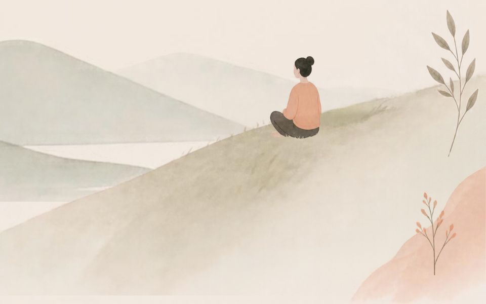

12 sierpnia 2026 · Justyna Siwek
Czy dajemy sobie prawo do odpoczynku?
Wakacje za nami lub przed nami, dla niektórych osób to jednak bez znaczenia, bo są zmęczone zarówno przed jak i po, w podobnym stopniu… Szczególnie, jeśli wakacje oznaczają tylko inne miejsce myślenia o sprawach zawodowych, na dodatek z gorszym zasięgiem. Nawet jeśli wiadomo, że prawdziwy odpoczynek daje naładowanie baterii, większą kreatywność, dystans pozwalający skuteczniej sprostać zawodowym wyzwaniom, to mimo to wiele osób w poczuciu niezdrowego obowiązku, z lęku przed utratą kontroli (bo jak nadrobię potem te 2 tygodnie?) lub negatywną oceną współpracowników wykonuje na wakacjach służbowe telefony, odpowiada na maile, albo przynajmniej uczy się czegoś pożytecznego leżąc na plaży żeby nie tracić czasu…
Warto się wówczas zastanowić skąd przekonanie, że odpoczynek jest stratą czasu i jakie konsekwencje takiego podejścia mamy obecnie i będziemy mieli w przyszłości. Brak relaksu przy dużym oddaniu sprawom zawodowym oznacza nieuchronnie przewlekły stres, a ten może prowadzić nie tylko do wypalenia zawodowego, które go się zapewne nie boimy, jeśli praca jest naszą pasją, ale do stanów lękowych, rozdrażnienia, bezsenności, spadku koncentracji uwagi, trudności w myśleniu analitycznym, a w rezultacie zarówno do gorszego wykonywania swojej pracy jak i pogorszenia relacji z bliskimi i ze współpracownikami.
Przekonania, które utrudniają relaks brzmią często niewinnie: „bez pracy nie ma kołaczy”, „najpierw praca, potem odpoczynek”. To oczywiste, tylko kiedy ta praca się kończy? Czy jesteśmy w stanie zrealizować 100% naszych obowiązków, żeby zasłużyć na wolne?
Do tego relaks nie daje nam tak wyraźnych efektów jak praca, nie oznaczamy sobie przecież poziomu kortyzolu przed i po wyjeździe, a skutki braku pracy są bardziej namacalne. Istotne jest, jak traktujemy odpoczynek. Czy jest on prawem czy nagrodą. Bo jeśli trzeba na niego zasłużyć, to kto i jaką miarą ocenia te zasługi? Przy zbyt wysokim samokrytycyzmie i pracoholizmie nigdy w pełni na odpoczynek nie zasłużymy, więc w najlepszym przypadku przemęczymy się na urlopie z wyrzutami sumienia, mając nadzieję, że wszystko nadrobimy z nawiązką po powrocie z urlopu.
Ryzykiem dla naszego odpoczynku jest także sytuacja, kiedy nasza samoocena oparta jest głównie na dokonaniach zawodowych. Jeśli do utrzymania chociaż znośnego samopoczucia potrzebujemy atencji innych dla naszych osiągnięć i pracowitości. Wówczas na urlopie będziemy się czuli bezwartościowi i nawet jeśli będziemy wtedy dobrymi rodzicami, czy partnerami, nasza samoocena będzie zagrożona. Dlatego z mozołem będziemy jej bronić tłumacząc wszystkim dookoła niezwykle trudną sytuację w pracy, wyjątkowość naszego stanowiska, specyfikę branży itp. usprawiedliwiając to, że pracujemy na urlopie.
W dobrym odpoczynku nie pomagają także lękowe przekonania typu „co ludzie powiedzą?”. Możemy sobie podstawić odpowiedź, która jest najbardziej przerażająca – że jesteśmy samolubni, leniwi, nieodpowiedzialni… Oczywiście jak nie wyjedziemy, to c o l u d z i e p o w i e d z ą też może nas dopaść, więc żeby nie wyszło, że nas nie stać, wyjeżdżamy fizycznie, mentalnie jednak tkwiąc w pracy.
Jak sobie pomóc i dać prawo do odpoczynku?
Pierwszy krok to ustalenie źródła problemu i nie danie się zwieść wymówkom, które opowiadamy ochoczo rodzinie i znajomym. Ważne jest jakie mamy przekonania o odpoczynku i czy one nam służą. Jak odpoczywało się w domu rodzinnym, czy odpoczynek był ceniony? Pomocny może być też dystans z perspektywy czasu – czy za pół roku, albo za pięć lat będzie miało takie znaczenie, że tak się na tych wakacjach poświęciliśmy? Co będziemy wspominać za 10 lat – maile i raporty czytane na plaży, czy zabawę z dziećmi i romantyczny spacer przy zachodzie słońca? Duże znaczenie ma, czy odpoczywamy tak jak lubimy, tak jak lubią członkowie naszej rodziny, czy jak wypada. Jeśli nasze potrzeby odpoczynku nie są zaspokojone, nie mamy motywacji, żeby faktycznie korzystać z urlopu, nie ma też wtedy efektu odprężenia, przejścia z trybu walki w tryb relaksu. Jeśli pragniemy ciszy i spokoju, a wybraliśmy się do głośnego kurortu to będziemy zmęczeni hałasem i nadmiarem bodźców. Podobnie, jeśli nie lubimy nudy i upałów, a mamy spędzić kilka dni na leżakowaniu na plaży. Popływamy, podreptamy po okolicy, poznamy wszystkie budki z lodami i co dalej?
Jeśli mamy problem z odpoczywaniem istotne jest, żeby zadać sobie pytanie, co tracę nie będąc tu i teraz, i co faktycznie przeszkadza mi, żeby w pełni cieszyć się wakacjami. Bo urlop szybko mija, to bardzo ograniczony czas, jaki mamy w roku, a powrót do pracy jest i tak nieuchronny. Warto przeżyć te kilka, czy kilkanaście dni wychodząc całkowicie z naszej zawodowej roli.
Chcesz popracować nad swoją sytuacją zawodową?
Sprawdź, jak mogę Ci pomóc, albo umów się na pierwszą rozmowę.
Więcej o rozwoju zawodowym Umów wizytę